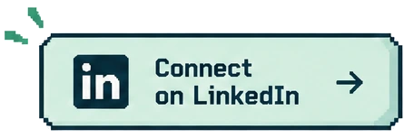

Best way to reach me
Connect on LinkedIn
Tell me what you would like to discuss.

Have a role, collaboration, or question in mind? Explore the work below, then get in touch.
Start here
LinkedIn is the best way to reach me. I keep my direct contact information private.
Best way to reach me
Tell me what you would like to discuss.

Reviewing my work?
The Hiring Guide connects my answers to specific projects.
Project spotlight
My Portfolio System brings project stories and interactive work together. Portfolio Manager supports reviewed updates, while the Learning Content Lab provides browsing and search by learning format.
See how the systems connect →Portfolio System
Project stories, interactive examples, and the decisions behind them.
View the GitHub repository →Learning Content Lab
A public library interface organized around learning interactions, templates, job aids, prompts, and experiments.
Open the Learning Content Lab →